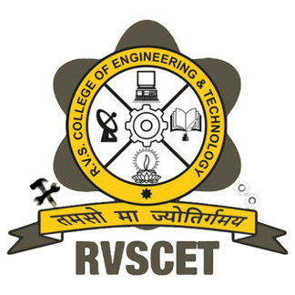

RVS COLLEGE OF ENGINEERING AND TECHNOLOGY, JAMSHEDPUR
DEPARTMENT OF COMPUTER SCIENCE AND ENGINEERING
NEXUS:
AGENTIC AI OPERATING SYSTEM
User Intent ➔ Autonomous Multi-Agent DAGs ➔ Controlled Computer Execution
Presented By: Group A5
- 1. Pushkar Raj (CSE/073/23)
- 2. Chandan Kr. Sah (CSE/074/23)
- 3. Prince Tiwari (CSE/075/23)
- 4. Shruti Kumari (CSE/076/23)
Under the Guidance of
Sulekh Kumar
Assistant Professor
Department of Computer Science and Engineering
RVSCET, Jamshedpur
- 01. Introduction & Problem Statement — Why chatbots fail and what NEXUS solves
- 02. System Architecture — Dual surfaces, FastAPI core & decoupled layers
- 03. Pictorial Workflow & Safety Pipeline — 6-step execution & human verification
- 04. Multi-Agent Orchestration — Specialist agents & dynamic self-correction
- 05. Models Used in NEXUS — Multi-provider AI Gateway (Gemini, Claude, GPT-4o)
- 06. Comprehensive Technology Stack — Next.js 14, Tauri, FastAPI, PostgreSQL, Playwright
- 07. Policy Engine & 1-Click Rollback — 4-tier risk matrix & SHA-256 snapshot recovery
- 08. Demerits & System Limitations — Key engineering constraints & boundary conditions
- 09. Future Scope & Engineering Roadmap — Vision perception, cross-platform & hardware keys
- 10. Conclusion & Key Takeaways — Capability + Control + Observability + Reversibility
THE PARADIGM SHIFT: FROM CONVERSATIONAL CHATBOTS ➔ TO ACTION-ORIENTED AGENTS
✖ The Problem: AI Can Think, But Who Controls It?
- Chatbots Stop at Text: Generate code answers but cannot execute terminal commands or run test suites.
- Voice Assistants are Shallow: Siri/Alexa rely on hardcoded intents; zero multi-step planning or reasoning.
- Autonomous Scripts are Hazardous: Unchecked shell scripts ('bash -c') risk catastrophic file loss and runaway loops.
- No Safety or Undo: Traditional tools offer zero pre-execution snapshots or rollback mechanisms.
✔ The Objective: What NEXUS Achieves
- Autonomous Planning: Transforms natural language into structured Directed Acyclic Graphs (DAGs).
- Air-Gapped Policy Engine: Every action is evaluated against a 4-Tier Risk Matrix (LOW to CRITICAL).
- Unified Diff Approvals: Inspect exact line-by-line file changes before modifying workspace files.
- 1-Click Rollback: Pre-execution SHA-256 snapshots allow instant recovery if anything goes wrong.
CORE HIGHLIGHTS: Dual Interaction Surfaces (Next.js 14 Web Dashboard + Tauri Desktop HUD) | Air-Gapped Trust: Reasoning models have ZERO direct shell access; all operations pass through the Policy Engine.
SAFETY GUARANTEES: Pre-execution snapshots capture SHA-256 hashes BEFORE mutation | Policy Engine halts on HIGH/CRITICAL actions | Git-style unified diffs eliminate ambiguity | Invariant verification triggers dynamic replanning or 1-click rollback.
PHASE 15 RECOVERY: ErrorClassifier categorizes failures (TIMEOUT, SYNTAX_ERROR) | DAGPatcher dynamically splices recovery steps into the active plan with strict replan budgets to prevent infinite loops.
Google Gemini
gemini-1.5 / 2.0
Reasoning & Multimodal
- 1M+ token context window for repo-wide comprehension.
- Native screenshot and document vision analysis.
- Fast token throughput for real-time response.
Anthropic Claude
claude-3-5-sonnet
DAG Planning & Code
- Top-tier DAG synthesis & tool-call accuracy.
- High adherence to negative safety constraints.
- Exceptional Python & TypeScript code generation.
OpenAI
gpt-4o / o1
Algorithmic Logic
- Multi-step mathematical verification.
- Strict JSON schema conformance.
- Comparative benchmark evaluation baseline.
Local / Ollama
Llama 3 / Mistral
Private & Offline
- Zero cloud telemetry for sensitive corporate data.
- Runs on local GPU/CPU hardware.
- Cost-free development & offline fallback.
STRUCTURED OUTPUT GUARANTEE: Every model output is validated against Pydantic v2 schemas (0% JSON failures) with live per-step token/cost accounting.
FULL-STACK RIGOR: Frontend: Next.js 14, React 18, TypeScript 5.4, Tailwind CSS | Desktop HUD: Tauri 1.5 (Rust, <100ms summon) | Backend: FastAPI, SQLAlchemy 2.0, PostgreSQL + pgvector, Playwright | Quality: 194 Pytest test suites passing.
4-Tier Risk Matrix (Air-Gapped Governance)
- LOW (Autonomous): Read-only file inspection, metrics queries. Executed without user interruption.
- MEDIUM (Session Grant): Non-destructive scripts, running pytest test suites. Authorized via session grant.
- HIGH (Mandatory HITL): Modifying project files, browser clicks. Requires interactive git-style diff approval.
- CRITICAL (Immediate Confirm): Destructive deletes ('rm -rf'), dropping databases. Explicit confirmation; never cached.
Reversibility & 1-Click Rollback
- Pre-Execution SHA-256 Snapshots: Captures exact byte backups before any tool modifies workspace files.
- Live Unified Diff Previews: Shows exact green (+) additions and red (-) deletions in approval modals.
- State Drift Detection: Halts rollback if target files were modified by an external process.
- 1-Click State Restoration: Restores original file contents and directory trees cleanly with one click.
- Append-Only Audit Ledger: Every prompt, decision, and token cost is permanently saved to an immutable log.
1. Multi-Step Latency
Coordination Overhead
- DAG synthesis & policy checks add 1.5 - 3s latency compared to raw prompt chatbots.
- Multi-turn self-reflection loops increase execution time for time-sensitive tasks.
2. External Irreversibility
Network Boundaries
- Filesystem edits are 100% reversible via snapshots; external calls (emails, webhooks) cannot be undone.
- Requires strict HIGH/CRITICAL policy classification to prevent accidental dispatches.
3. OS Platform Gating
TCC & Permissions
- Deep desktop control requires explicit macOS Accessibility (AXIsProcessTrusted) permissions.
- Full parity on Windows & Linux requires containerized subprocess adapters.
4. Web DOM Drift
Browser Fragility
- Playwright automation can fail if third-party web apps deploy sudden front-end UI redesigns.
- Mitigated by combining text matching with accessibility tree resolution.
Phase 16 Milestone
Academic Benchmark Suite
- Standardized benchmark test harness across software engineering, sysadmin, and research tasks.
- Formal ablation studies: Baseline LLM vs. RAG vs. Memory-RAG vs. Full Agentic NEXUS.
- Quantitative metrics: Task Success Rate, Latency, Cost Efficiency, and 0.0% Safety Violations.
Perception Milestone
Multimodal Vision Screen Perception
- Expands beyond accessibility trees to real-time multimodal screen vision perception.
- Enables interaction with custom HTML Canvas applications, legacy desktop GUIs, and CAD tools.
Platform Milestone
Full Cross-Platform Parity
- Linux integration via Wayland / X11 and native D-Bus system bus.
- Windows support via UI Automation APIs and sandboxed PowerShell execution wrappers.
Security Milestone
Hardware-Gated Approvals
- Touch ID and WebAuthn hardware security keys to sign CRITICAL-tier actions.
- Eliminates stolen-session risks during production cloud deployments and irreversible actions.
“Give AI the ability to act — without giving up control.”
Capability + Control + Observability + Reversibility = Trustworthy Agentic AI
Proven Engineering Rigor
- 15 completed development phases backed by a formal constitution (AGENTS.md).
- 194 automated unit and integration tests passing.
- Strict Pydantic v2 and TypeScript static type validation.
True Agentic OS
- Beyond text generation: natively drives terminals, browsers, and desktop apps.
- Dynamic DAG replanning and self-correction to recover from failures.
- Dual surfaces: Web Cockpit + Lightweight Ambient HUD.
Safe by Design
- Air-gapped Policy Engine enforcing 4-tier risk classification.
- Git-style unified diffs eliminate ambiguity during approvals.
- 1-click snapshot restoration guarantees protected user workspaces.
Thank You!
Questions & Answers
NEXUS: Agentic AI Operating System
Department of Computer Science & Engineering • RVSCET, Jamshedpur
Group A5: Pushkar Raj (073) • Chandan Kr. Sah (074) • Prince Tiwari (075) • Shruti Kumari (076)
Under the guidance of: Sulekh Kumar (Assistant Professor, CSE)